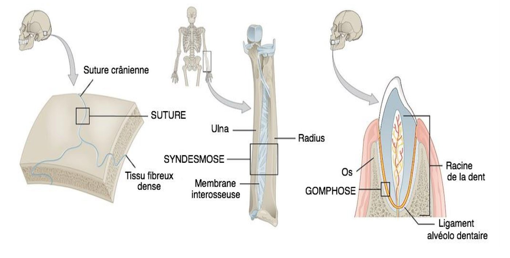
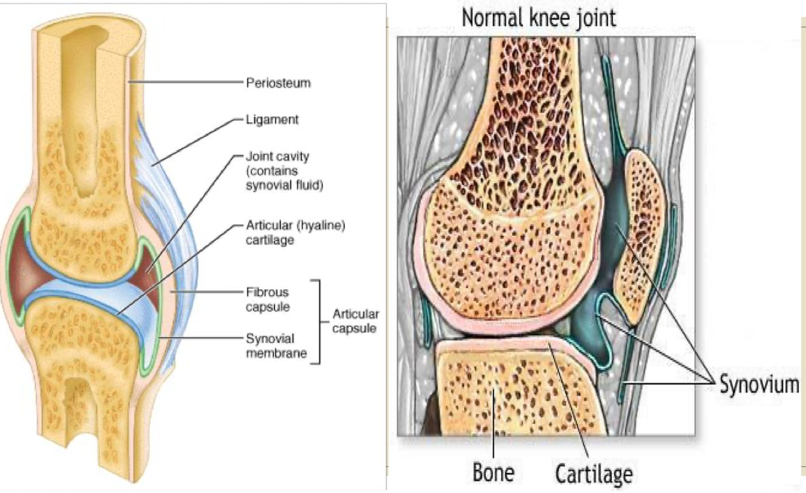
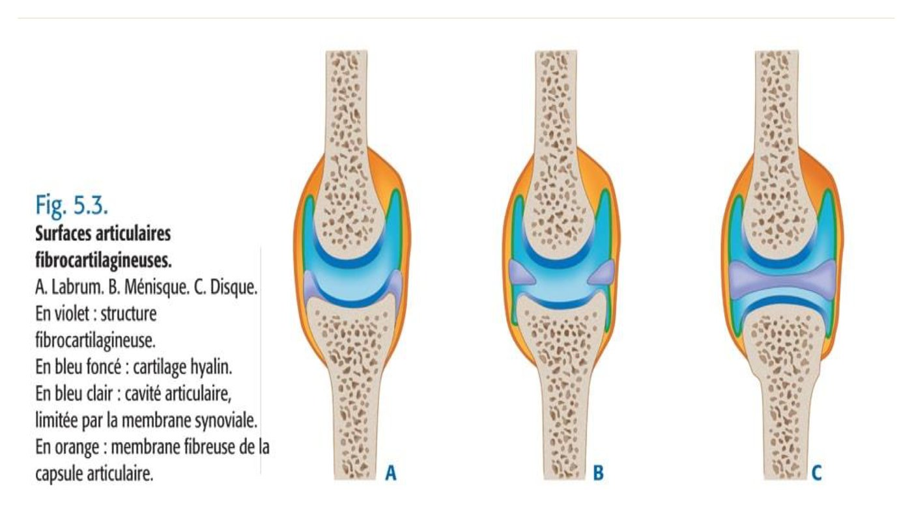
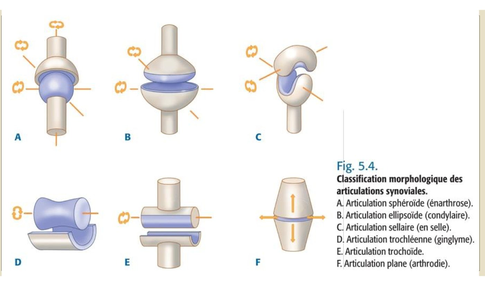

S1 · Anatomy · Summary
Articular system
- Essentials
- Classification
- Synarthroses
- Amphiarthroses
- Synovial joints
- Adaptation means
- 6 synovial types
- Mechanics
- Vessels & nerves
- Exploration
- Exam traps
- Self-check
If you remember only this
- Joint = means of union between neighbouring bony or cartilaginous parts; studied by arthrology.
- Synarthroses = fibrous, immobile, no articular cartilage: synfibroses (skull sutures), syndesmoses (distant surfaces, interosseous membrane), gomphosis (tooth in its socket).
- Amphiarthroses = cartilaginous, semi-mobile: synchondroses (temporary, growth plate), symphyses (pubic symphysis).
- Synovial joints (diarthroses) = mobile, joint cavity + synovial membrane; most limb joints. Hyaline cartilage: not vascularized, thickness proportional to pressure; its degeneration = osteoarthritis. Synovial membrane: richly vascularized and innervated.
- Ligaments = passive stabilizers; tendons of periarticular muscles = active stabilizers.
- Adaptation means (only when surfaces are incongruent): labrum, meniscus, disc — fibrocartilage without vessels or nerves, so a tear can't heal.
- 6 synovial types: spheroid (3 axes), ellipsoid (2), saddle (2), hinge/ginglymus = pulley surfaces, 1 axis, trochoid, plane.
1. Definitions and classification p. 1 slides p. 7–11
Joint (articulation)
The means of union between neighbouring bony or cartilaginous parts. The articular system is studied by arthrology.
| Structure | Name | Mobility | Features (summary slide) | Where |
|---|---|---|---|---|
| Fibrous | Synarthrosis | Immobile (fixed) | No movement, no cartilage | Skull |
| Cartilaginous | Amphiarthrosis | Semi-mobile | Small-range movement; cartilage and ligaments | Vertebrae, pubic symphysis |
| Synovial | Diarthrosis | Mobile | Wide range of movement; joint cavity | Shoulder, hip, knee… |
I. Synarthroses — fibrous, immobile joints p. 1 slides p. 13–17 2023-24 · 2024-25
No articular cartilage. Bony surfaces united by fibrous (connective) tissue. 3 kinds:
| Kind | Description | Examples |
|---|---|---|
| Synfibroses 🎯 | Joint gap filled with fibrous tissue, which ossifies: plane, squamous or serrated suture | Skull and face (sutures) |
| Syndesmoses 🎯 | Bony surfaces far from each other, united by connective tissue | Interosseous membrane of the forearm or leg; ligamenta flava between vertebrae |
| Gomphosis 🎯 | Special type uniting a tooth to its dental socket (alveolus) by fibrous tissue | Tooth |

II. Amphiarthroses — cartilaginous, semi-mobile joints p. 1 slides p. 19–21
| Kind | Description | Example |
|---|---|---|
| Synchondroses | Temporary joints during growth, between epiphysis and diaphysis of limb long bones = the growth plate (conjugation cartilage), responsible for growth in length. Trauma → epiphyseal detachment. | Growth plate |
| Symphyses | Semi-mobile, reduced mobility. Bony surfaces united by a mixed fibrous and fibrocartilaginous structure, reinforced by peripheral ligaments. | Pubic symphysis |
III. Synovial joints (diarthroses) p. 1–2 slides p. 23–35 2024-25 · 2025-26
Defined by a joint cavity and a synovial membrane. Mobile; the majority of limb joints. They have: a joint gap of only a few mm, epiphyseal articular surfaces of variable shape covered with hyaline cartilage, a joint cavity, means of union, means of adaptation.
1. Articular surfaces — hyaline (articular) cartilage
- Smooth, bluish-white.
- Its thickness is proportional to the pressure it bears (so not the same in every joint).
- Not vascularized.
- Its degeneration causes osteoarthritis (arthrosis).
2. Means of union
| Structure | Description |
|---|---|
| Articular capsule | Fibrous sleeve inserted around or near the bony articular surfaces. 2 layers: external fibrous membrane (variable thickness and strength) and internal synovial membrane lining its inner face. |
| Synovial membrane 🎯 | Richly vascularized and innervated. Secretes synovia (synovial fluid): translucent, viscous; helps the surfaces glide and contributes to their nutrition. |
| Ligaments 🎯 | Resistant fibrous bands uniting the parts of the joint = passive stabilizers. |
| Tendons of periarticular muscles 🎯 | Complete the ligaments = active stabilizers. |
- (Slides) Hemarthrosis = blood effusion in a joint after trauma. Hydarthrosis = effusion / hypersecretion of synovial fluid.
- Bursae: small pockets of synovial fluid that ease gliding and reduce friction; at the shoulder and knee.

3. Means of adaptation (fibrocartilages) p. 2–3 slides p. 37–41 2024-25 · 2025-26
Fibrocartilaginous structures that exist only in cases of articular incongruence, interposed between the bony surfaces. 3 types:
| Type | Shape | Role | Examples |
|---|---|---|---|
| Meniscus | Smooth fibrocartilaginous blade (crescent) | Stability | Knee (2: lateral and medial), acromioclavicular joint |
| Labrum (articular lip) | Fibrocartilaginous ring on the periphery of the bony articular zone | Increases the depth and surface | Shoulder (scapulohumeral), hip (coxofemoral) |
| Disc | Fibrocartilaginous partition | Shock absorption, spreads pressure and traction | Intervertebral disc, sternoclavicular joint |
Key consequence
All three are devoid of vessels and nerves → a fibrocartilage tear cannot heal → a torn meniscal fragment causing symptoms
must be removed.

B. Classification of synovial joints — 6 types (shape of surfaces) p. 3–4 slides p. 45–54 2023-24
| Type (other names) | Surfaces | Axes | Example |
|---|---|---|---|
| Spheroid (enarthrosis, ball-and-socket) | Two inverted spheres, one full (convex), one hollow (concave) | 3 — great mobility | Shoulder (scapulohumeral), hip (coxofemoral) |
| Ellipsoid (condylar) | Two ellipsoids, one concave, one convex | 2 | Radiocarpal (wrist) |
| Sellar (saddle, reciprocal reception) | Each convex in one direction, concave in the other | 2 | Carpometacarpal (thumb) |
| Trochlear (ginglymus, hinge) 🎯 | Two pulley-shaped surfaces, one full, one hollow | 1 | Humero-ulnar (elbow) |
| Trochoid (pivot, cylindrical) | Cylindrical, full and hollow | — | Proximal and distal radio-ulnar |
| Plane (arthrodia, gliding) | Two flat surfaces | Reduced mobility | Acromioclavicular |

IV. Articular mechanics p. 4 slides p. 55–61 2023-24
| Axis | Movements |
|---|---|
| Sagittal | Abduction: moves a segment away from the median plane · Adduction: brings it closer (both in the frontal plane) |
| Transverse | Flexion: "closes" the joint · Extension: "opens" it |
| Vertical | Lateral rotation: carries the anterior face of the segment outward · Medial rotation: carries it inward |
VI. Vascularization and innervation (slides) slides p. 62
- Joints, especially synovial ones, are richly vascularized and innervated.
- Vessels come from periarticular arterial and venous circles; lymphatics drain to the deep nodes of the region.
- Nerves belong to the peripheral cerebrospinal and the autonomic nervous systems, usually collateral branches of the nerves of the muscles acting on the joint.
- Many sensory receptors, especially in the capsule and ligaments: pain (sprains hurt) and proprioception (posture, coordination).
V–VII. Exploration and pathology p. 4 slides p. 63–66
| Method | What it shows |
|---|---|
| Clinical exam | Range and direction of movements, bilateral and comparative, passive and active |
| Standard X-ray | Bony surfaces and joint gap; the simplest and most used exam |
| Arthrography | Joint cavity opacified by contrast injection; can be coupled with CT (arthroscan) |
| Ultrasound and especially MRI | Articular cartilage and fibrocartilages |
| Arthroscopy | Direct endoscopy of the joint cavity; can also treat (e.g. removing torn meniscal fragments) |
- Non-traumatic pathology: arthritis (infectious or inflammatory), degenerative osteoarthritis.
- Traumatic pathology, most often dislocations (loss of contact between two articular surfaces) and sprains (ligament rupture or elongation).
Exam traps
False statements to recognise
- Synarthroses have surfaces "covered with articular cartilage" — false: no articular cartilage. 2 years
- Syndesmoses "unite surfaces very close to each other" / "unite teeth to sockets" / "ossify over time" — false: distant surfaces; teeth = gomphosis; ossifying sutures = synfibroses. 2 years
- "Synarthroses are temporary joints during growth" — false: that is synchondroses (amphiarthroses). 2024-25
- "Ligaments are active stabilizers" / "tendons are passive stabilizers" — false, it's the reverse. 2024-25
- Hyaline cartilage "has the same thickness in all joints", "is richly vascularized", "its lesions are reversible" — false. 2 years
- Adaptation fibrocartilages "are richly innervated/vascularized", "can heal", "exist in all joints", "lie between capsule and synovium", "are never injured"; "menisci are elbow fibrocartilages" — false. 2 years
- Hinge joints "unite a concave and a convex surface" / "are condylar" / "are amphiarthroses" — false: pulley surfaces, 1 axis, synovial. 2023-24
- Adduction "around a transverse axis" or "carries the anterior surface outward" — false: sagittal axis, frontal plane; carrying the anterior face outward is lateral rotation. 2023-24
Self-check
Classify joints by structure and by mobility.
Fibrous = synarthroses (immobile); cartilaginous = amphiarthroses (semi-mobile); synovial = diarthroses (mobile).
Name the 3 synarthroses with an example each.
Synfibroses (skull/face sutures), syndesmoses (interosseous membrane of forearm/leg, ligamenta flava), gomphosis (tooth–socket).
Synchondrosis vs symphysis?
Synchondrosis: temporary, growth plate between epiphysis and diaphysis. Symphysis: semi-mobile, mixed fibrous/fibrocartilaginous with
peripheral ligaments, e.g. pubic symphysis.
Give 4 properties of articular (hyaline) cartilage.
Smooth, bluish-white; thickness proportional to the pressure borne; not vascularized; its degeneration causes osteoarthritis.
What are the two layers of the capsule, and what does the inner one do?
External fibrous membrane, internal synovial membrane. The synovial membrane is richly vascularized and innervated and secretes
synovial fluid (gliding, nutrition of the surfaces).
Passive vs active stabilizers?
Passive: ligaments. Active: tendons of periarticular muscles.
When do adaptation means exist? Name the 3 types with role and example.
Only in articular incongruence. Meniscus (stability; knee, acromioclavicular), labrum (deepens and widens the surface; shoulder, hip),
disc (shock absorption; intervertebral, sternoclavicular).
Why must a symptomatic torn meniscal fragment be removed?
Fibrocartilage has no vessels (or nerves), so a tear cannot heal.
What are bursae and where are they?
Small pockets of synovial fluid that ease gliding and reduce friction; shoulder and knee.
List the 6 synovial types with their axes and an example.
Spheroid 3 (shoulder, hip); ellipsoid 2 (wrist); saddle 2 (thumb carpometacarpal); trochlear/hinge 1 (humero-ulnar); trochoid
(radio-ulnar); plane (acromioclavicular).
Lateral vs medial rotation — what moves where?
Around a vertical axis: lateral rotation carries the anterior face of the segment outward; medial rotation inward.
Hemarthrosis vs hydarthrosis? Dislocation vs sprain?
Hemarthrosis: blood in the joint after trauma; hydarthrosis: excess synovial fluid. Dislocation: loss of contact between surfaces;
sprain: ligament rupture or elongation.
Which imaging shows cartilage and fibrocartilage? Which allows treatment?
Ultrasound and especially MRI; arthroscopy (direct endoscopy, can remove torn meniscal fragments).